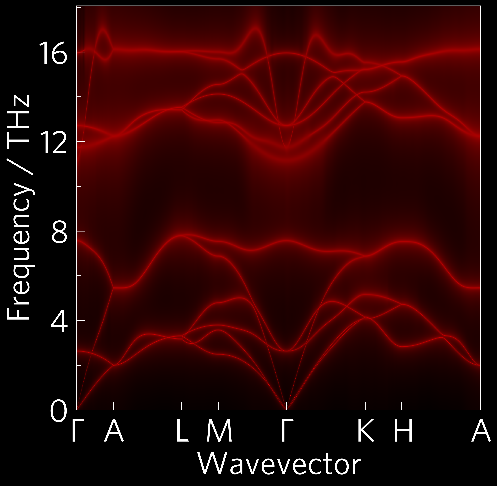

Tutorial-02: Individual Customisation¶
Like tutorial-01, this is a phonon dispersion, but this time the modes have been broadened in relation to the imaginary component of their self-energy. This represents the degree to which they scatter (broader modes indicates more scattering). More scattering causes a decrease in lattice thermal conductivity. The data for the scattering comes from Phono3py, which also uses the supercell approach.
In most cases, plotting scripts will be more complex than Tutorial-01. Many functions require more inputs, and most users will want to customise plots with colours and stuff.
The CLI version of this code is:
tp plot wideband ../data/zno/band.yaml ../data/zno/kappa-m404021.hdf5 --large -s dark_background -c '#000000' -c '#ff0000' --poscar ../data/zno/POSCAR
And the python version is:
1 2 3 4 5 6 7 8 9 10 11 12 13 14 15 16 17 18 19 20 21 22 23 24 25 26 27 28 29 30 31 32 33 34 35 36 37 38 | #!/usr/bin/env python3
import tp
# Variables
pfile = '../data/zno/band.yaml'
kfile = '../data/zno/kappa-m404021.hdf5'
poscar = '../data/zno/POSCAR'
temperature = 300
colour = ['#000000', '#ff0000']
# You can ignore down to line 20!
from os import path
if not path.isfile(kfile) or (path.getsize(kfile) < 1024*1024*100):
raise Exception('File not found, please use get-data.sh in the folder above.')
# Stop ignoring!
# running this section as a function is particularly important for mac users
# due to its use of multiprocessing (this is the case for all projected phonon
# plots including alt_phonons and wideband)
def main():
# Axes
fig, ax, _ = tp.axes.large.one('dark_background')
# Load
kdata = tp.data.load.phono3py(kfile, quantities='wideband')
pdata = tp.data.load.phonopy_dispersion(pfile)
# Plot
tp.plot.phonons.add_wideband(ax, kdata, pdata, temperature=temperature,
colour=colour, poscar=poscar)
# Save
fig.savefig('tutorial-02.png')
if __name__ == "__main__":
main()
|
Variables (lines 6-9)¶
It’s handy to put variables you might want to edit at the top of the script, and also tidy in the case of long paths like here, so all future examples will be written this way.
Axes (line 24)¶
All axes can take a style sheet or list of style sheets as arguments.
matplotlib comes with many preinstalled, and you can also make your
own and put them in ~/.config/matplotlib/stylelib/. I’ve installed
a couple for you already. You can list them by importing pyplot
and typing print(plt.style.available) in Python.
Load (lines 27-28)¶
Several plot functions, including all of the projected phonon
dispersions such as this, require multiple data inputs, so multiple
load steps are required. Most load functions also take a quantities
argument, which tells them exactly what to load, and can be a list or a
space-delimited string. In this case, there is a shorthand,
wideband, which stands in for 'frequency gamma'.
Plot (lines 31-32)¶
Plot commands take a wide range of arguments, from the standard
matplotlib kwargs such as alpha (transparency) and calculation
conditions, such as temperature, to custom ThermoParser inputs,
like here where we’ve provided two colours (black and red respectively)
which ThermoParser can use to generate a custom colourmap. DoS plots
and all projected phonon plots also require a POSCAR file.
Colourmaps¶
Some functions, including heatmaps and projected dispersions such as the wideband plot above, accept single colours which are passed to ThermoParser’s colourmap generators. These can also be accessed directly, allowing greater control of the output or use on non-tp applications. The colourmap used here could be generated with:
tp.plot.colour.linear(cmin='black', cmax='red')
linear interpolates linearly between the colours, and is used for
projected dispersions. elbow provides two linear sections with a
midpoint you specify, and uniform calculates the midpoint position
based on the relative compositions of the colours, which is used for
heatmaps.